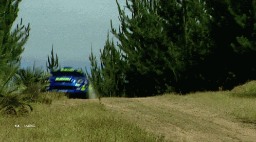

About me
Introduction
Hello! My name is Ivo Saidans and you are visiting my resume page. As stated in the summary, I have years of experience in electronics manufacturing processes
and I enjoyed my time in that field of work, also learned a lot not just about that particular field, but about myself too. As it always is, all good things
come to their logical end and now I am looking to pursue a carreer in something that has actually always been of interest to me... computers and IT in general.
Ever since I was a little boy, computers have fascinated me. At first it was fun little pasttime playing games, but overtime more technical aspects of the
hardware and software that make up for us our daily activities started to interest me. Mind you, more in a hobby tinkering kinda way. Be it upgrading my PC
over the years or even modding games. This hobby has persisted with me over the years.
I have tried my hand at a bit of everything over time. Game modding, trying to make a game myself on Unreal Engine and even a bit of coding here and there.
Now I've completely engulfed myself in learning to be a web developer and what you're looking at right now is my first proper stab at it.
My hobbies
Now that I have introduced myself and told you, the reader, a bit about my background I'll also tell a little about my hobbies that I'm passionate about and
which brighten up my days.
Video games

As stated before, I love 'em and I have been enjoying them since I was a little boy(FYI that's not me in the gif). I used to play on my PC but recently
I've moved more over to PS5. It's great relaxing after a long day with some video games. Gran Turismo, Like a Dragon, STALKER are among my favorite
video game franchises.
Music

It has been my passion, since I was a teenager. Either listening to music or even making it myself(I sometimes play guitar... poorly), it's always there
for me and I love it. I used to be a lot into metal music but lately I find myself listening more to something with a bit more of a jazz flavor to it.
Just in general, I prefer intrumental music more.
Racing

I've always liked cars and I grew up around my cousins who had a garage, so they'd be constantly repairing either their own cars or their friends cars, but
somehow they were never particularly interested in watching races. I wasn't either up until a few years ago when I had some more free time on my hands and
started watching Formula 1. I really fell in love with the upredictability of racing, the engineering that goes into it, the human element. Be it Formula 1,
WRC, endurance racing, touring car races, etc I try to catch as many as possible live.